Практичний досвід · журнал «ДентАрт» 2025 №1
Комплексна реабілітація пацієнта з вродженою скелетною аномалією класу ІІІ
COMPREHENSIVE REHABILITATION OF A PATIENT WITH CONGENITAL SKELETAL ANOMALY OF CLASS III
Цей клінічний випадок демонструє діагностичні і клінічні можливості сучасної стоматологічної практики, а також абсолютну передбачуваність усіх етапів та результатів лікування. Автор наполягає на відсутності «темних плям» у галузі вивченості жувального органу. Тому питання найскладнішого комплексного лікування у щелепно-лицевій ділянці є лише питанням правильної діагностики та наявності злагодженого колективу лікарів, персоналу і менеджменту. У цій статті будуть розглянуті основні етапи діагностики, планування та реалізації лікування у випадку вираженої вродженої скелетної та зубоальвеолярної патології класу ІІІ. Зі зрозумілих причин у статті неможливо дати докладний опис кожного відвідування клініки. Але автор завжди відкритий для спілкування із зацікавленими колегами.
Пацієнт звернувся зі скаргами на естетичний дефект, порушення дикції та погане пережовування їжі. Три роки тому він проходив компенсаторне ортодонтичне лікування брекет-системою, яким не був задоволений. Після об'єктивного дослідження виявлено: обличчя симетричне, непропорційне, лімфатичні вузли не збільшені, м'які. За профілем: збільшена нижня третина обличчя, кут нижньої щелепи збільшений, носогубні складки і підборідна ямка згладжені, стан навколоротових м'язів у нормі.
Співвідношення зубів за Енглем 16/46, 26/36, 13/43, 23/33 за класом III; мезіальний прикус, скелетна форма, діастема, треми на верхній щелепі, розбіжність центрів зубних рядів внаслідок міграції зубів та ротації нижньої щелепи; перехресний односторонній прикус ліворуч; горбиковий контакт у зоні молярів праворуч; вторинна адентія зубів 14, 15, 25. Подовження фронтальної ділянки верхньої та нижньої щелеп. Звуження верхнього зубного ряду в ділянці адентії зубів 14, 15, 25. Звуження верхнього зубного ряду в ділянці молярів; хронічний катаральний гінгівіт; макроглосія; дисфункція скронево-нижньощелепного суглоба. При функціональному навантаженні – лінощі жування.
З перенесених раніше захворювань: вітрянка (2016), ангіни – щорічно з дитинства, остеохондроз, сколіоз. Алергія на укуси комах. Травми – перелом лівого плеча (падіння з велосипеда) у дитинстві. Травма потилиці у 4 роки.
Додаткові методи дослідження: фотометрія, біометрія, ортопантомографія (ОПТГ), телерентгенографія (ТРГ), комп'ютерна томографія (КТ) із докладним аналізом, міофункціональний аналіз (МФА).
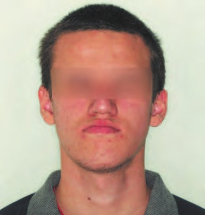
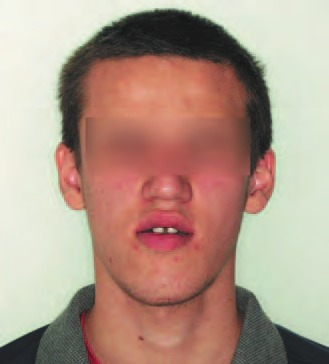
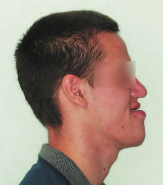
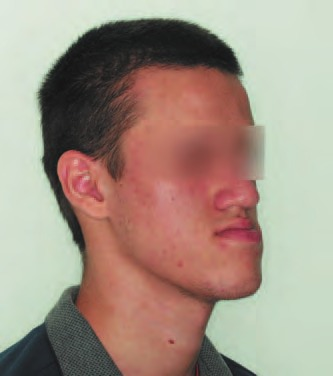
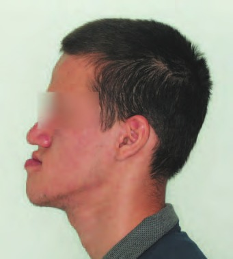
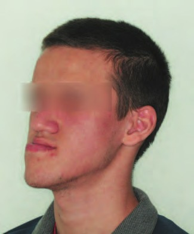
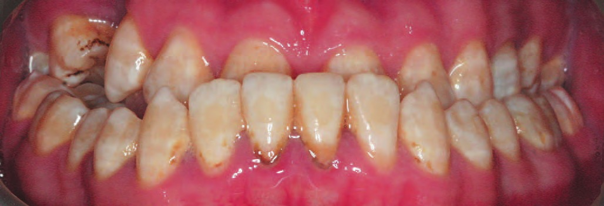
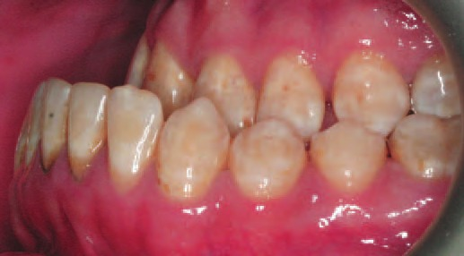
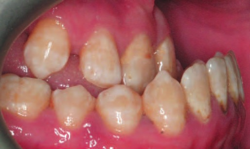
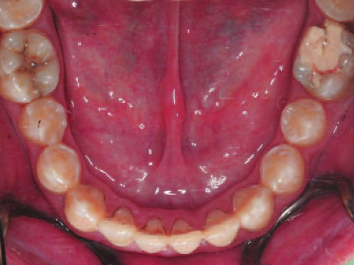
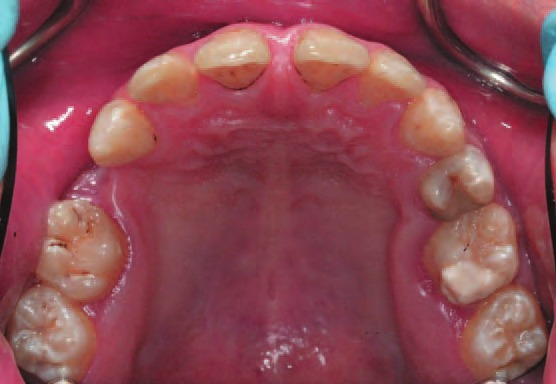
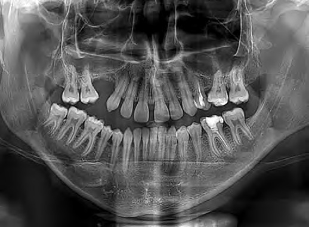
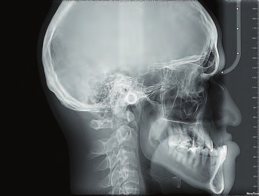
| Показники | Величина (норма) | До початку лікування | Під час лікування | Після лікування |
|---|---|---|---|---|
| ANB | 2°±1° | -10,1 | ||
| NA-APog (Convexity) | 0°±2° | 18 | ||
| SN-Pog | 80°±2° | 100 | ||
| FH-NPog (Facial angle) | 87,8° | 99 | ||
| Wits (BO-AO) | -1,0±2 mm | -14,7 | ||
| SNA | 82°±2° | 90,9 | ||
| SNB | 80°±2° | 101 | ||
| SN-Go | 44°±3° | 53,1 | ||
| FMA/FMIA/IMPA (Tweed) | 25±5°/65±3°/90±5° | 24/77/79 | ||
| Ar-Go-Me (Gonial angle) | 119°±5° | 127 |
| Показники | Величина (норма) | До початку лікування | Під час лікування | Після лікування |
|---|---|---|---|---|
| U1-NA | 22°±2° | 26,5 | ||
| U1-NA | 4±2 mm | 4,5 | ||
| L1-NB | 25°±2° | 22 | ||
| L1-NB | 4±2 mm | 6 | ||
| Кут II (міжрізцевий кут) | 130°±5° | 142 |
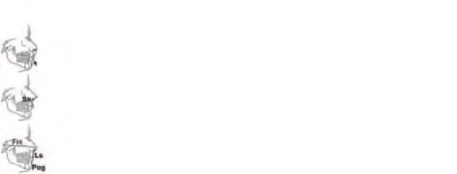
| Показники | Величина (норма) | До початку лікування |
|---|---|---|
| E-Line | -2±2mm | +2 |
| Носогубний кут | 102°±8° | 56,2 |
| FH-Ls'-Pog' (кут Z) | 75°±4° | 98 |
Скелетний тип
Верхня прогнатія; верхня мікрогнатія (незначна); нижня прогнатія; нижня макрогнатія (значна); скелетний клас ІІІ; нейтральний (мезоцефалічний) тип зростання лицевого скелета; кут розгорнутості нижньої щелепи трохи більший норми; висота гілки нижньої щелепи знижена; передня висота обличчя в нормі; збільшена задня висота обличчя; знижена нижня висота обличчя.
Дентоальвеолярний тип
Рівень загальної оклюзійної площини щодо аксіально-орбітальної площини знижений; незначне викривлення оклюзійної площини у дистальному відділі; протрузія верхніх різців щодо основи черепа; ретрузія нижніх різців щодо базису нижньої щелепи.
Супутні прояви
Випуклий профіль; носогубний кут менший за норму.
Уточнений план комплексного лікування
- пародонтологічна підготовка;
- терапевтична підготовка;
- нормалізація положення язика (призначення вправ);
- хірургічно асоційоване розширення верхньої щелепи з накладенням апарата;
- ортодонтичне лікування за допомогою брекет-системи на верхній і нижній щелепах;
- створення місця для імплантації на верхній щелепі в ділянці відсутніх зубів 14, 15, 25, виправлення оклюзійної площини, положення зубів;
- можливо, застосування мікроімплантів;
- після декомпенсації мезіального прикусу проміжна діагностика для планування ортогнатичної хірургії;
- на підставі результатів віртуального лікування ухвалення рішення про обсяг оперативного втручання; видалення зуба 48;
- деталізація положення зубів;
- імплантація в зоні премолярів ліворуч та праворуч на верхній щелепі (кісткова пластика та/або синусліфтинг);
- керамічні реставрації вільного дизайну;
- незнімні дротяні ретейнери на верхній та нижній щелепах.
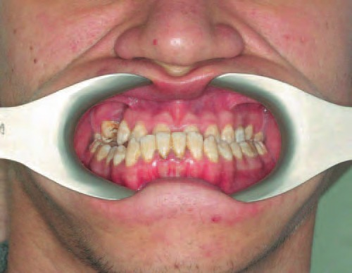
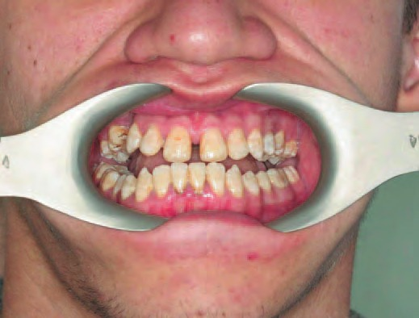
У рамках діагностичних досліджень зроблено серію позаротових та внутрішньоротових фото, отримано відбитки для виготовлення діагностичних моделей щелеп, проведено мануальний функціональний аналіз (обстеження скронево-нижньощелепного суглоба (СНЩС), оцінка рухів нижньої щелепи, статусу жувальних м'язів). На повторній консультації після завершення діагностичних досліджень та встановлення діагнозів пацієнтові озвучено загальні принципи лікування таких патологій, продемонстровано випадки лікування мезіального прикусу з ортогнатичною хірургією. Пацієнт та найближчі родичі погодилися на комплексне лікування. Підписано усі необхідні документи.
Перший клінічний етап лікування – санація пародонта та реставрація твердих тканин зубів відповідно до їхньої істинної анатомії.
Одночасно розпочато міофункціональні корекції, які робитимуться паралельно з основним лікуванням та на етапі післяопераційної реабілітації і ретенції. Далі було зроблено хірургічно асоційоване розширення верхньої щелепи з одночасною установкою розширювальної пластини, яка була зафіксована внутрішньокістковими гвинтами до фрагментів верхньої щелепи. Пацієнт самостійно активував гвинт на 90° кожні 24 години.
Через 5 тижнів було зафіксовано брекет-систему на верхній щелепі, на зубах 13, 12, 11, 21, 22, 23 (низький торк). Встановлено дугу 013CuNiTiD, дистальні загини без проміжків.
Через наступні 4 тижні – непряма фіксація всіх брекетів та замків нижньої щелепи (низький торк), дуга 014CuNiTiD. Гвинт розширювача залитий композитом.
Ще через 4 тижні – фіксація 17, 16, 24, 26, 27, дуга 014CuNiTiD.
Потім через 5 місяців розширювальну пластину знято.
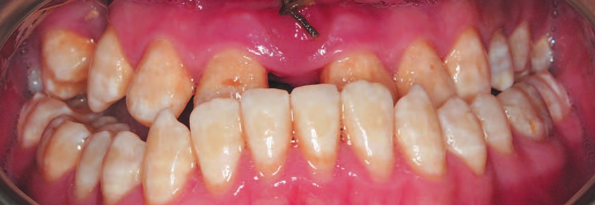
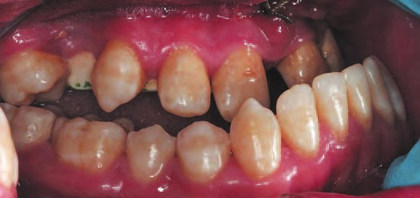
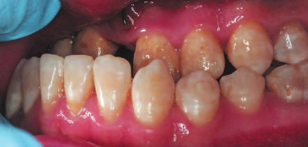
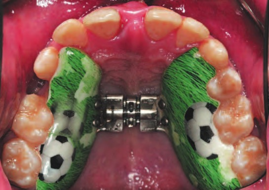
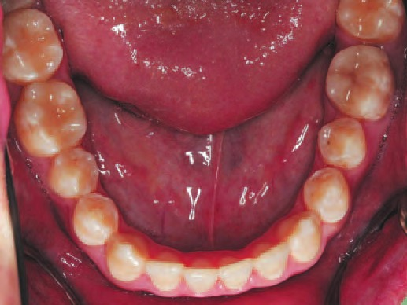
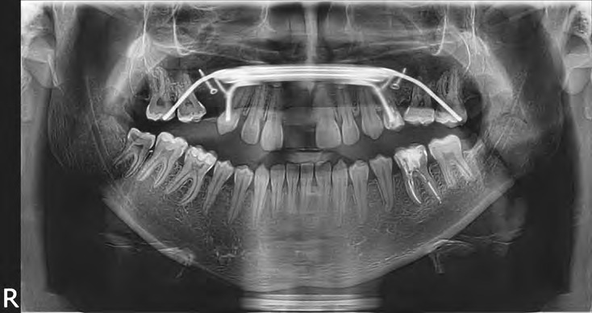
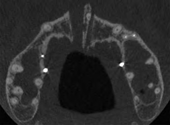
Через місяць після операції: зняття зубних відкладень. Обрана брекет-система DQ.
Мезіодистальні розміри зубів: 17 = 11 мм, 16 = 11 мм, 12 = 8 мм, 11 = 9,3 мм, 21 = 9 мм, 22 = 8 мм, 13, 23 = 8 мм, 24 = 7,5 мм, 26 = 11 мм, 27 = 11 мм. Ширина зубного ряду в зоні премолярів має бути 40,6 мм, у зоні молярів – 53,1 мм (розрахунок за Поном). Вимірювання за методом Нансе: сума мезіодистальних розмірів зубів 16–26, якби були всі зуби ВЩ = 102 мм, довжина зубного ряду (16–26) = 97 мм. Дефіцит місця 5 мм. Дефіцит місця, зумовлений викривленням оклюзійної площини: 7,5 мм. Справжній дефіцит місця на ВЩ – 12,5 мм. Вимірювання методом Нансе на НЩ: 1,5 мм – надлишок місця. Отримано відбитки ВЩ та НЩ. Прибрано фрагменти пластмаси в ділянці зубів 13, 23, 24. Бондинг брекетів DQ на зуби 13–23 (низький торк). Висота позиціонування зубів 11, 21 – 4,5 мм, 12, 22 – 4 мм, 13, 23 – 5 мм. Поправки з ангуляції для зубів 11, 21 – 4°, для 12, 22 – 2°.
Встановлено дугу 013CuNiTiD. Відстань 11–21 = 11,5 мм, 14–24 = 49,5 мм, 16–26 = 55,5 мм. Надано рекомендації щодо використання додаткових засобів та предметів гігієни.
Через наступні 5 тижнів
Скарг немає. Відстань 11–21 = 10 мм. Дуга ВЩ 013CuNiTiD. Непряма фіксація брекетів DQ на зуби 35–45 (33–43 низьким торком), замки Snaplink. Зуби 36, 46, замки Tithanium orthos 47, 37. Реконтурування зубів 43, 42, 41, 32, 33. Дуга НЩ 014 CuNiTi Damon. Гвинт заблокований композитом.
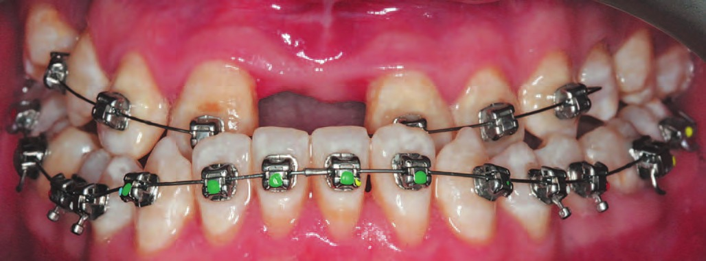
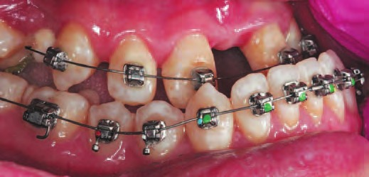
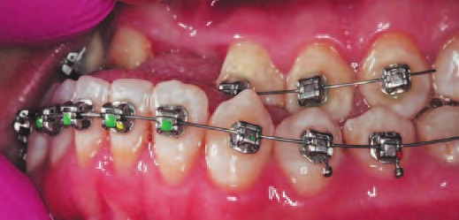
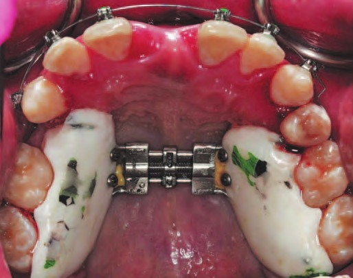
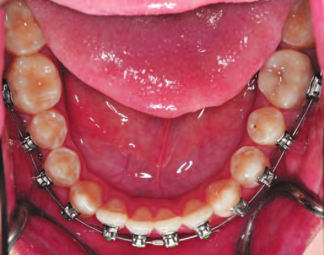
Через наступні 4 тижні
Скарг немає. Корекція базису апарата ВЩ. Бондинг брекета DQ 24; замки Snl. 16, 26; Tit. Orth. 17, 27. ВЩ 013 CuNiTi, НЩ 014 CuNiTi. Рекомендовано покращити гігієну.
Через наступні 4 тижні
Скарг немає. Заміна дуги ВЩ 0175х0175 NiTi на нову, тому що колишня була деформована. Відстань: 13–23 = 43 мм; 16–26 = 57,5 мм; 17–27 = 61 мм; 16–26 = 54 мм.
Через наступні 4 тижні
Скарг немає. Зняття апарата ВЩ. Заміна дуг ВЩ/НЩ на 0175х0175 NiTi. Відстань: 13–23 = 43 мм; 16–26 = 57,5 мм; 17–27 = 66 мм; 16–26 = 54 мм.
Через наступні 5 місяців
Скарг немає. Відстань: 13–23 = 45 мм / 41 мм; 16–26 = 56,5 мм / 58 мм; 17–27 = 65 мм / 65 мм; фісури 16–26 = 52 мм / 53,5 мм; між центральними різцями = 9 мм / 7 мм. 11 та 21 / 43 та 33 = 8–9 мм. Дуги ті самі. Еластичний ланцюжок 11–23. Фіксація накладок на зуби 43, 33.
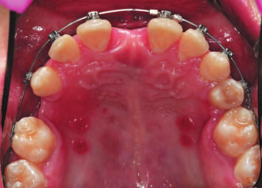
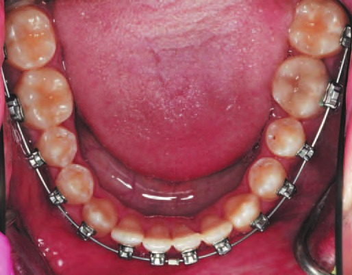
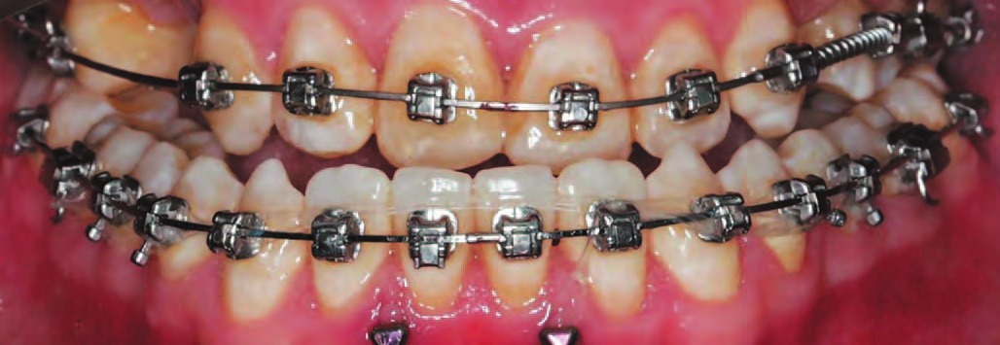
Через наступні 4 тижні
Скарг немає. Установка мікроімплантів з вестибулярного боку між проєкціями коренів зубів 32–31, 41–42. Еластичний ланцюжок від дуги між зубами 32–31, 41–42 до мікроімплантів. Еластичний ланцюжок 11–21. Дуги 0175х0175 NiTi. Пружини, що відкривають NiTi Medium 13–16, 23–24 з активацією на ширину брекета. Отримано новий відбиток НЩ для виготовлення «бюгельного апарата із роз'єднанням у дистальному відділі». Наступний візит через 2 тижні (здавання бюгельного апарата).
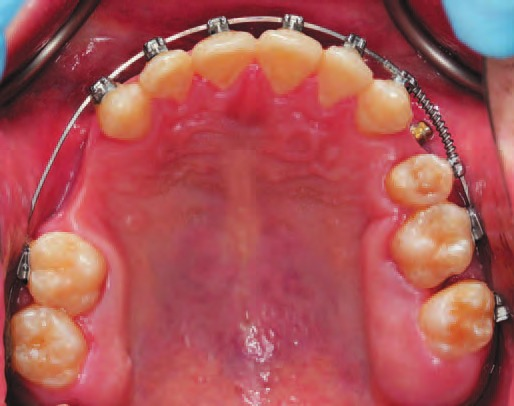
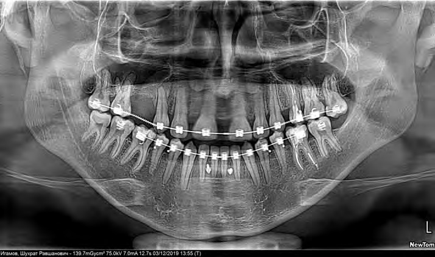
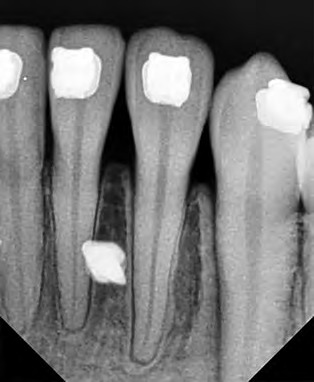
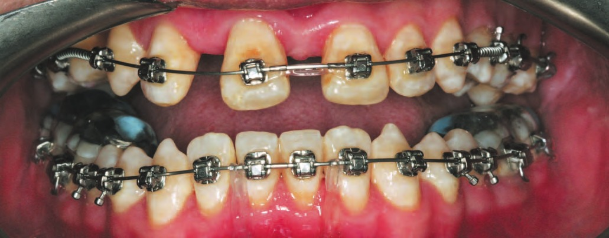
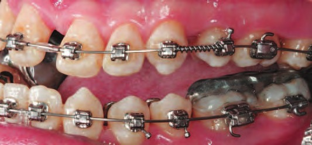
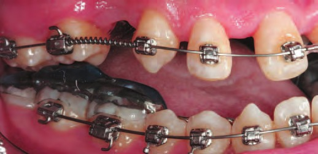
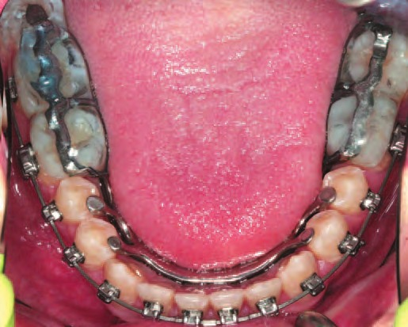
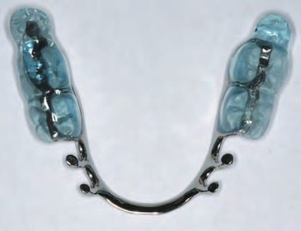
Через 11 місяців після початку лікування
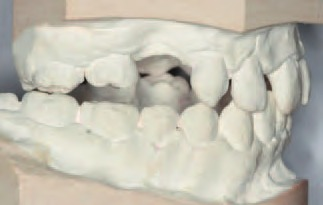
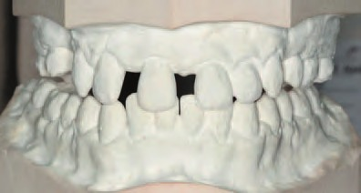
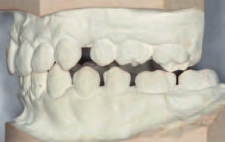
Через наступні 2 місяці
Скарги: кілька днів тому з'явилися болі в жувальних м'язах ліворуч при широкому відкриванні рота і пережовуванні твердої їжі. Біль приблизно на 8 за 10-бальною шкалою. Проведено розслаблення м'язів. Об'єктивно: гігієна незадовільна. Дуги ВЩ 019х025, НЩ 017х025 ТМА. Еластичний ланцюжок 12–21, 36–46 від мікроімпланта до дуги. Рекомендовано: поліпшити гігієну, не стискати зуби, сухе тепло та масаж, не вживати твердої їжі.
Через наступні 3 місяці
Скарг немає. Гігієна задовільна. Анестезія STA «Ультракаїн Д-С форте», установка мікроімпланта (8 мм) на ВЩ в ділянці відсутнього зуба 24 для дисталізаціії зубів 25–27. Аналіз дентального знімка в ділянці зуба 24 (мікроімпланта). Еластичний ланцюжок 13–23. Активація пружини 23–25. Дуги ВЩ/НЩ 019х025 SS.
Через наступні 11 місяців
Перед наступним хірургічним етапом слід створити треми 12–13, 22–23 = 0,5–0,7 мм.
Через наступні 2 місяці
Операція в обсязі 3 Мах. Горизонтальна остеотомія за нижнім типом Ле-Фора верхньої щелепи, сагітальна ретроморальна остеотомія нижньої щелепи. Зменшуюча геніопластика.
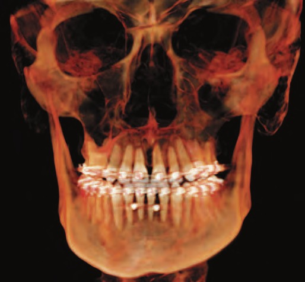
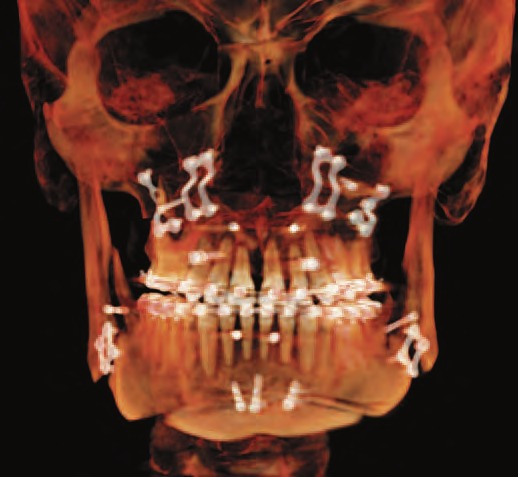
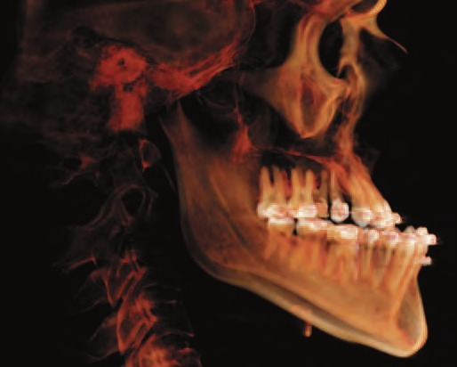
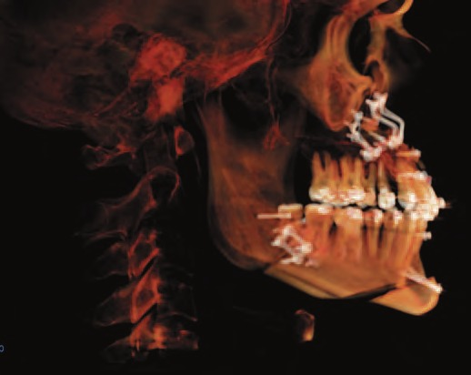
Призначено міжщелепні еластики (МЩЕ), що обмежують відкривання рота, протягом 4 тижнів після операції. Рот можна відкривати в межах, які дозволяють еластики. У стандартній ситуації – еластики першого класу. За необхідності додаємо еластики в залежності від того, які проблеми з оклюзією. Без еластиків рот не відкривати. Через 4 тижні зняти еластики на 3 години перед контрольним оглядом положення фрагментів без тяг. При гарному положенні збільшити до 6 годин. При потребі додаємо / коригуємо носіння еластиків. Харчування – «рідко-м'яке». Обмеження фізичного навантаження.
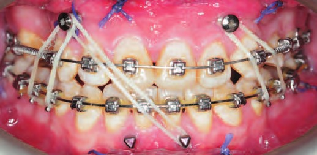
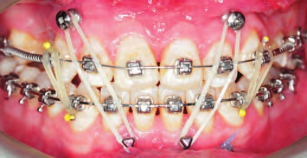
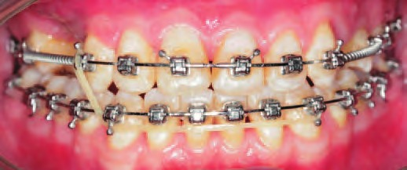
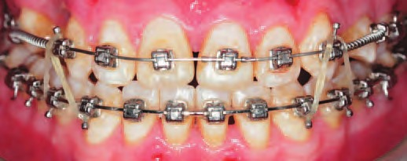
Через наступні 2 місяці
Скарг немає. Гігієна задовільна. Дуги верхня та нижня 019х025 SS. Пружина 23–25 активна. Дезактивація пружини 13–16. Виміряно мезіодистальний проміжок 13–16 = 15,5мм. Призначено МЩЕ «Імпала» 13–43–44, 23–33–34, 25–35–36, 17–16–46.
Через наступні 2 місяці
Локальна анестезія, седація. Видалення зуба 48. Установка дентальних імплантів Strauman NC в зоні зубів 14, 15, 24. Відкритий синус-ліфтинг та кісткова пластика, субепітеліальний сполучнотканинний трансплантат.
Через наступні 4 тижні
Скарг немає. Гігієна задовільна. Дуги верхня та нижня 019х025 SS. Активація пружини 23–25 NiTi heavy. Заміна пружини 13–16 на NiTi heavy. Призначено МЩЕ «Пінгвін» на зуби 13–43–33.
Через наступні 4 тижні
Діагностика скронево-нижньощелепних суглобів і мімічної мускулатури.
| Ділянка | 17.07.17 | 01.12.2021 | ||
|---|---|---|---|---|
| Справа | Зліва | Справа | Зліва | |
| Плечі і шия | П-3, Ш-0 | П-3, Ш-2Д | ||
| Атланто-потилична зона | 0 | 0 | ||
| Трапецієподібний м'яз | 2Д | 0 | ||
| Груднинно-ключично-соскоподібний м'яз | 2Б | 2Б | ||
| Гортань | 0 | 0 | ||
| Лопатково-під'язиковий м'яз | 0 | 2Д | ||
| Двочеревний м'яз | 0 | 0 | ||
| Щелепно-під'язиковий м'яз | 1 | 1 | 0 | 2Д |
| Надпід'язикові м'язи | 0 | 2Д напруж. | ||
| Підпід'язикові м'язи | 0 | 0 | ||
| Жувальний м'яз, поверхнева частина | 2 | 2Б | 2Б | |
| Жувальний м'яз, глибока частина | 0 | 0 | ||
| Скроневий м'яз, передні пучки | 2Д | 2Д | ||
| Скроневий м'яз, середні пучки | 0 | 2Д напруж. | ||
| Скроневий м'яз, задні пучки | 0 | 0 | ||
| Медіальний крилоподібний м'яз | 3 | 3 | 2Д легкий | 3 |
| Горбик верхньої щелепи | 2 | 2 | 0 | 2Д |
Пальпація СНЩС, скронево-нижньощелепної зв'язки і позадусуглобового простору (01.12.2021): болю та дискомфорту не виявлено. Ширина відкривання рота: комфортна 45 мм. Норма: комфортна – 53–58 мм (діти – 40 мм). Кінцеве відчуття: м'яко. Бокові рухи: праворуч 4 мм, ліворуч >8 мм. Норма – не менше 8 мм. Звукових явищ не виявлено.
Через наступні 15 місяців
Дебондинг брекет-системи на верхніх і нижніх зубах. Фіксація незнімних ретейнерів на зуби 13–23, 33–43, D-rect 016Х022. Виготовлена ретенційна капа на верхній зубний ряд.
Висновки
На момент написання статті пацієнт перебуває у стабільній ремісії, яку забезпечують знімні та незнімні ретенційні апарати. СНЩС та жувальна мускулатура повністю адаптовані до нового положення. Питання тотального протезування відкладене за бажанням пацієнта.
Ще на етапі планування було прописано точний, покроковий алгоритм лікування цього пацієнта, який був реалізований без будь-яких різночитань. Саме такий підхід є оптимальним для комплексного лікування та реабілітації всіх стоматологічних пацієнтів і гарантує довгостроково-стабільні результати.
Загальна тривалість лікування – 4,5 роки. Близько року втрачено через не залежні від клініки обставини. Цей клінічний випадок не є винятком у моїй практиці, але включає практично всі види стоматологічних маніпуляцій, що застосовуються у сучасній стоматології. Із нестандартних рішень – був використаний бюгельний протез на нижній щелепі у комплексі з мініімплантами для вирівнювання оклюзійної площини та мініімплант для спрямованої дисталізації зубів на верхній лівій щелепі. На даний момент аналогічний кейс перебуває на етапі ортодонтичної декомпенсації мезіального прикусу. За відсутності форс-мажорів прогнозована тривалість лікування – 3,5 роки. Є згода від пацієнта на публікацію.
Користуючись можливістю, автор від щирого серця дякує редакції журналу «ДентАрт» і Сергію Радлінському за багаторічну співпрацю (з 1987 року) та підтримку. Щиро вітаю із ювілеєм журналу! Поза всяким сумнівом, це видання стало культовим для стоматологів усього світу. Ваш внесок у розвиток стоматологічної практики, науки та освіти неоціненний!